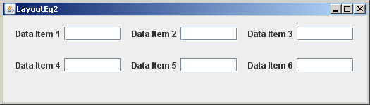

Yes.

JPanels sind sowohl Komponenten als auch Container.
Als eine Komponente können sie in einen Container gestellt werden (so wie JPanel))
und als Container können sie andere JPanels enthalten.
Jedes Panel hat seinen eigenen Layoutmanager.
Dieses Beispiel verwendet FlowLayout für alle Panels.

Die Abbildung zeigt, wie die entsprechenden Labels und Textfelder in den Panels (dargestellt mit gepunkteten Linien) platziert wurden und wie diese Panels in zwei andere Panels (dargestellt mit ganzen Linien) platziert wurden. Dann wurden die zwei Panels dem Frame hinzugefügt. Die Größe des Frames ist so gesetzt, dass das Layout gut aussieht.
War es für dieses Layout notwendig zwei Panels zu verwenden, die die kleineren Panels enthalten?